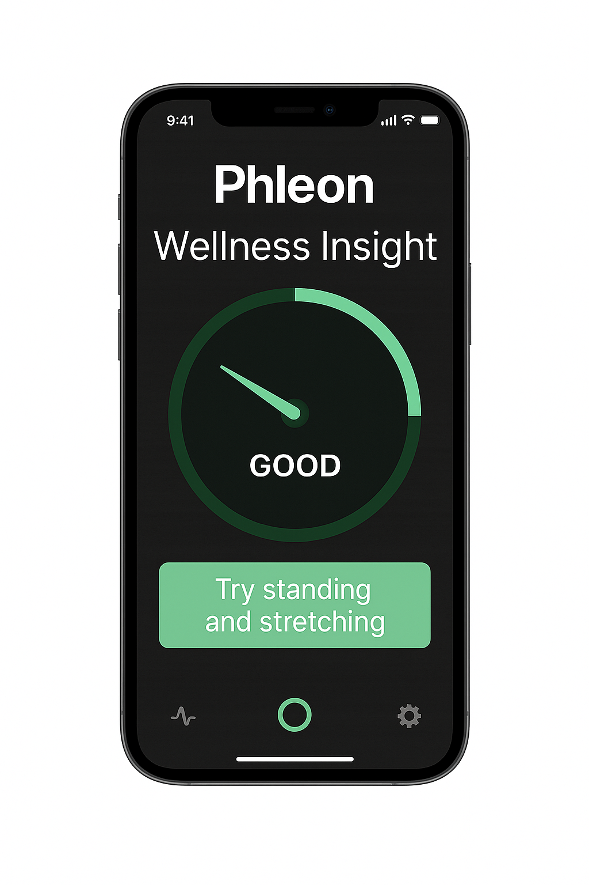

Our Mission
VenoSense is developing a wearable medical device that enables early and continuous detection of deep vein thrombosis (DVT) risk. By combining biosignal sensors with intelligent feedback, our system helps reduce the risk of silent DVT events.
Technology
Our prototype integrates impedance plethysmography (IPG), photoplethysmography (PPG), motion, and temperature sensors into a comfortable wearable. Real-time signal processing and smart feedback help identify venous stasis trends before symptoms arise.


Team
Mario Schrenk – Co-Founder
Sandra Seichter – Co-Founder
Contact
For inquiries or pilot collaboration: hello@venosense.tech
Join Pilot Program